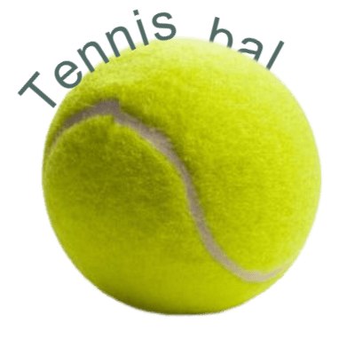

Tennis is een populaire balsport die wereldwijd door miljoenen mensen wordt beoefend, zowel recreatief als professioneel. Het spel wordt gespeeld met een racket en een kleine, vilten bal die over een net op een rechthoekige baan wordt geslagen. De sport vraagt om een combinatie van techniek, snelheid, uithoudingsvermogen en tactisch inzicht. Of het nu op gravel, gras of hardcourt wordt gespeeld, tennis biedt spelers van alle leeftijden de kans om zich fysiek uit te dagen en hun vaardigheden voortdurend te verbeteren. Bovendien kent tennis een rijke geschiedenis en een levendige internationale competitie
Tennis vindt zijn wortels in het middeleeuwse Franse jeu de paume, een spel waarbij spelers de bal met de blote hand tegen een muur sloegen. In de loop der tijd ontwikkelden zich varianten waarbij men gebruikmaakte van handschoenen, houten slagen en uiteindelijk rackets. De moderne vorm van tennis ontstond in de 19e eeuw in Engeland, waar het bekend werd als lawn tennis en voornamelijk op grasbanen werd gespeeld. In 1877 werden de eerste officiële kampioenschappen georganiseerd in Wimbledon, een toernooi dat uitgroeide tot één van de meest prestigieuze sportevenementen ter wereld. Vandaag de dag blijft tennis zich wereldwijd verder ontwikkelen, met nieuwe technieken, materialen en spelstijlen die de sport voortdurend vernieuwen.
Het doel van tennis is om de bal over het net te slaan zodat de tegenstander hem niet correct kan terugspelen – binnen de lijnen en met de juiste techniek. Bij twee spelers speelt men enkelspel, terwijl dubbelspel met vier spelers op een iets bredere baan wordt afgewerkt. Een wedstrijd is opgebouwd uit sets, die bestaan uit games: een set win je doorgaans met zes games en minstens twee games voorsprong, waarbij bij 6-6 vaak een tiebreak volgt om de set te beslechten. De service, die afwisselend vanaf beide zijden van de baan begint, vormt het startpunt van elke game en moet diagonaal in het servicevak van de tegenstander landen. Punten worden toegekend via een scoringsysteem van 15, 30, 40 en game, met 'deuce' bij 40-40 waarna twee opeenvolgende punten nodig zijn om te winnen. Deze structuur zorgt voor intense rally's en strategische beslissingen, wat tennis zo spannend maakt voor spelers en toeschouwers.
Tennisbanen zijn verkrijgbaar in gravel (rood, populair in Europa), gras, hardcourt of kunstgras, waarbij elke ondergrond een eigen speelstijl en balgedrag vereist. Voor het spel heb je een racket met bespannen snaren nodig en een vilten bal van circa 67 mm doorsnede en 58 gram gewicht. In Nederland en België is tennis sterk verankerd, met bonden als KNLTB en Tennis en Padel Vlaanderen die clubs ondersteunen, competities organiseren en jeugdopleidingen stimuleren. Deze variatie in banen en materialen maakt tennis toegankelijk voor zowel recreatieve spelers op lokale clubs als professionals op internationale grand slams.

De vier grand slams: Australian Open, Roland Garros, Wimbledon en US Open zijn de grootste toernooien, met Wimbledon als oudste en meest prestigieuze op gras. In België heb je het Kim Clijsters Invitational en in Nederland de Davis Cup-wedstrijden.